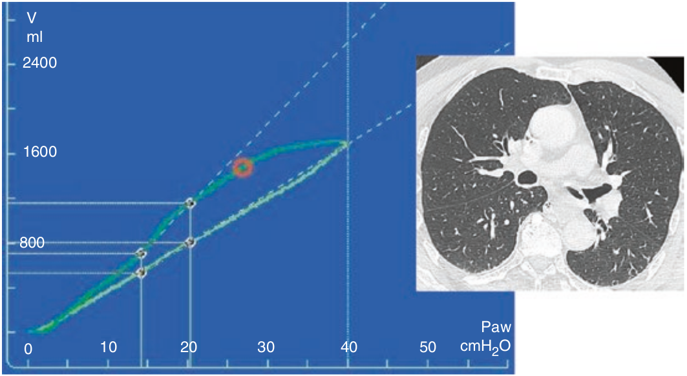

در ریه نرمال که قبل از شروع مانور پر از هوا است، ارتباط فشار-حجم خطی است. این یعنی در تمام طول مدت انبساط ریه، کمپلیانس ثابت باقی می ماند. تخلیه نیز خطی است. در ریه نرمال مقدار مختصری هیستره زیس (فاصله شاخه انبساط از تخلیه) وجود دارد که علت آن ویژگی های ویسکوالاستیک بافت ها است.

در مورد یک لوپ با فلو کم (نیمه استاتیک) در ریه نرمال کدام مورد صحیح است؟
۱ - مقدار زیادی هیستره زیس دارد
۲ - تغییری در شیب هنگام تخلیه روی میدهد
۳ - شاخه صعودی خطی و مختصری هیستره زیس دارد
۴ - هنگام انبساط شیب تغییر می کند
۵ - همانند لوپ دینامیک است